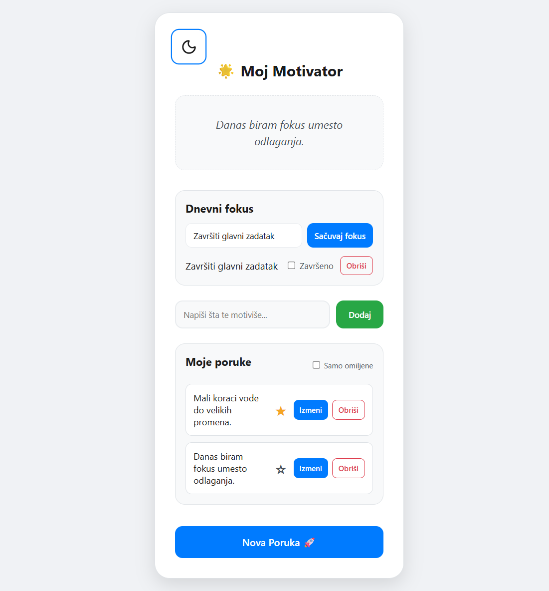

- Opis: Aplikacija za dnevni fokus i inspirativne poruke, sa mogućnošću kreiranja sopstvenih poruka i čuvanja omiljenih.
- Tehnologije: HTML, CSS, JavaScript, Jest, LocalStorage, Lucide Icons.
- Funkcionalnosti: Generator poruka, CRUD za lične poruke, favoriti, svetla i tamna tema, toast povratne informacije i podrška za pristupačnost.